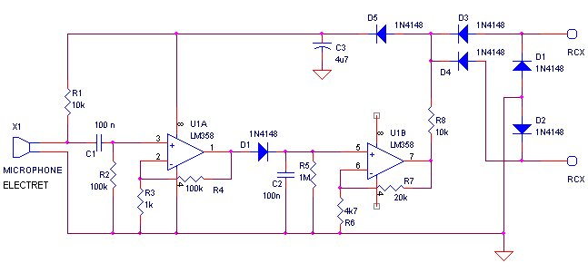

Robbert
Mattijs
van Mattijs, Stef en Robbert Mientki
januari 2001
| Lego-Knex
Robbert Mattijs |
Lego Sound Sensor
van Mattijs, Stef en Robbert Mientki januari 2001 |
This was our first project, to test our
knowledge of the electronics of the RCX and to get a feeling of how to
put the components into a lego brick. For convenience we used standard
components and no smd-components.
We designed it straight forward and of
course this leads almost exact to the design
of Michael Gasperi. His design was also published (without reference)
in a Dutch magazine, Elektuur july/august 2000, schematic 30. Of course
this is not a clean electronic design, but more "getting maximum functionality
from a minimal number of components".
We have tried to optimize the design (see
schematic below), which resulted in the following differences with respect
to the design of Michael Gasperi:
The RC-time of C2/R5 seems to be optimal, we've tried other values but they performed worse.
Increasing R8 from 1 kOhm to 10 kOhm gives a great reduction of power needs. This is quit simpel to understand, if you assume that most of the time there is no sound, then output 7 of U1 will be 0 Volt. The RCX drives its terminals 97% of the time (hard) to +8 Volt (see measurements). So the power consumption of R8 will be roughly 8 Volt / R8, which in the case of 1 kOhm is 8 mA. There is a little drawback, the effective signal range is only 2.5V ... 5V, instead of 0.5 V ... 5V. Because the amplifier isn't linear at all, and even has a memory effect, the decreased range doesn't affect the performance of the cirquit.
Combining the positive power supply and the signal generation, results in a power supply for the opamp which is 0.7 Volt less than normally. This is no problem because the opamps will work correctly downto 3 Volt, it will even save some (very little) current.

|
|
|
| The 4*2 brick, with the inside removed.
On the right the microphone already mounted. |
Here another look at the microphone, really small. |
|
|
|
| Still 4 resistors and 1 diode to go. | The same electronics seen from besides.
On the left you see the microphone. |
|
|
|
| Completely mounted.
It was a hard job to get the last 5 components in it. Because the electronics just fits in the height we have to mount a 1/3 height plate as a bottom cover (this wasn't planned). The largest mistake we made, was the use
of the wrong resistor type. We used 0.25 Watt metal film resistors, in
the future we will use 0.125 Watt carbon film resistors, these are the
smallest resistor components normally available.
|
It works perfect !
The microphone used was an
|